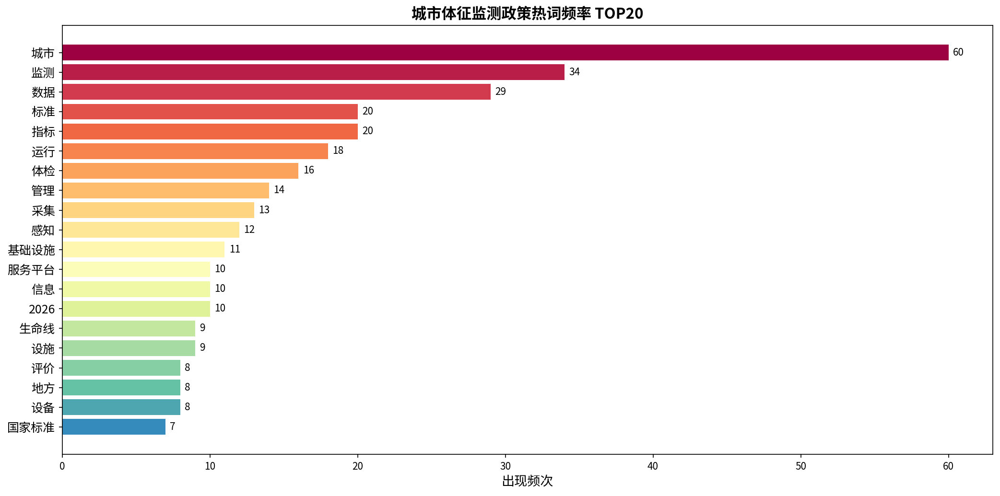
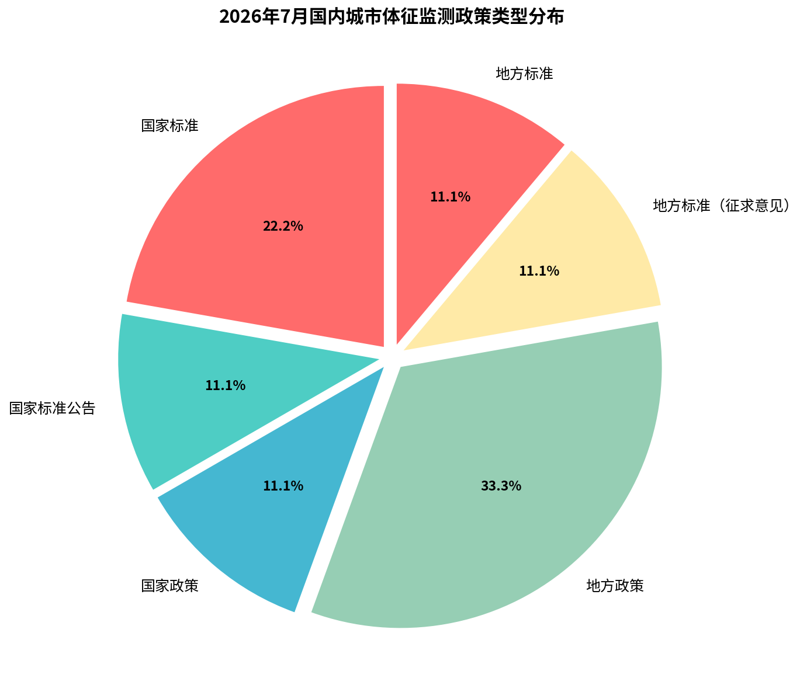
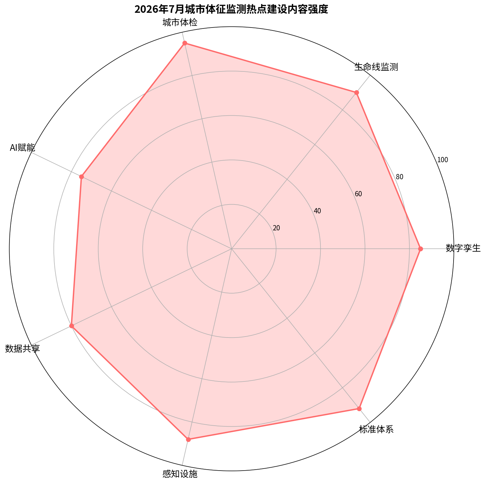
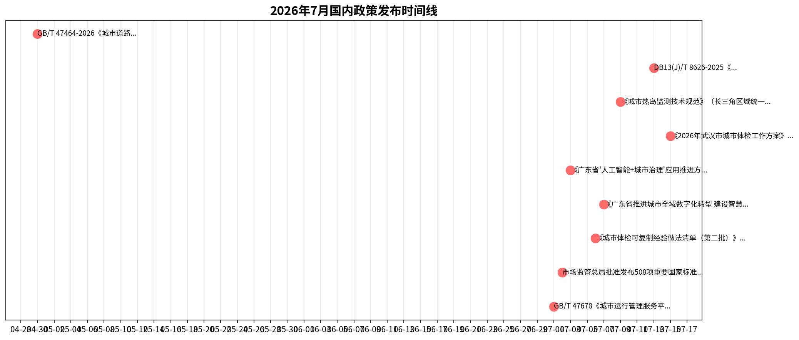
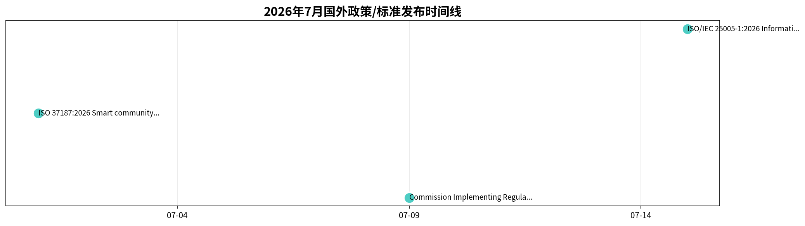
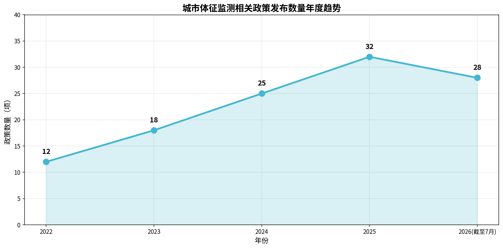

2026年7月发布政策、标准规范及指标深度解析
发布日期：2026-07-01
发布单位：国家市场监督管理总局、国家标准化管理委员会
监督单位：住房城乡建设部主管；SAC/TC426归口
政策要求：搭建国家、省、城市三级城市运管服平台标准体系，规范城市运行管理服务的数据交换、地理编码、网格划分、部件事件监测、信息采集及综合评价。推动城市运行'一网统管'，实现城市管理领域数据融通、业务协同。
发布日期：2026-07-02
发布单位：国家市场监督管理总局（国家标准委）
监督单位：国家标准化管理委员会
政策要求：批准发布508项推荐性国家标准和1项修改单，其中包含GB/T 47678系列城市运行管理服务平台标准、数字孪生领域标准、人工智能标准、城市消防安全标准、政务服务平台适老化服务建设指南等。
发布日期：2026-07-06
发布单位：住房城乡建设部办公厅
监督单位：住房城乡建设部（建办科函〔2026〕156号）
政策要求：总结各地在创新城市体检工作方法、建立城市体检与城市更新一体化推进机制、推动城市体检问题解决、加强工作保障等四方面经验，形成可复制推广清单。要求各地学习借鉴，深入推进'先体检后更新、无体检不更新'。
发布日期：2026-07-07
发布单位：广东省政务服务和数据管理局等11部门
监督单位：广东省政务服务和数据管理局
政策要求：广东首次在省级层面对城市全域数字化转型作出系统性部署。到2027年底，广州、深圳、佛山、东莞率先建成智慧高效治理体系；到2030年建成不少于10个全域数字化转型城市。提出3方面21项任务：打造重点场景（高效能治理、高品质生活、高质量经济、高质量更新）、筑牢数字底座（数据基础设施、算力网络、数字孪生）、激活内生动力（体制机制、运营运维、标准协同）。
发布日期：2026-07-03
发布单位：广东省住房和城乡建设厅
监督单位：广东省住房和城乡建设厅
政策要求：2026年底前基本建成省城市基础设施生命线安全监测系统，实现全省21个地市燃气、排水等关键市政领域数据全量接入省级统筹平台；全面落地城市运行管理服务平台；建成省级建设工程企业资质智能审批系统。2028年初步建成AI全域赋能的现代化城市治理体系，生命线感知设备有效接入率100%。
发布日期：2026-07-15
发布单位：武汉市人民政府（市住房更新局牵头）
监督单位：武汉市住房更新局
政策要求：7月内全面启动2026年城市体检，对全市约10万栋住房进行系统排查，覆盖128个街道、1000余个社区、1万余个小区。在'基础体检+专项体检'基础上新增'片区体检'，形成'一图一库一册'，为城市更新提供精准支撑。设置'4+5+1'指标体系，共278项指标。
发布日期：2026-07-09
发布单位：上海、江苏、浙江、安徽四省市市场监管局联合
监督单位：四省市市场监管局
政策要求：长三角区域统一地方标准，规范城市热岛监测的技术方法、数据处理和评价指标。面向社会公开征求意见，截止2026年8月9日。适用于长三角区域城市热岛效应监测与评估。
发布日期：2026-07-13
发布单位：河北省住房和城乡建设厅
监督单位：河北省住房和城乡建设厅
政策要求：河北省工程建设地方标准，规范城市基础设施生命线安全工程的监测技术要求，涵盖燃气、排水、供水、热力、桥梁、隧道等市政设施的安全监测与预警。
发布日期：2026-04-30
发布单位：国家市场监督管理总局、国家标准化管理委员会
监督单位：公安部道路交通管理标准化技术委员会归口
政策要求：规范城市道路交通信息监测和显示设备的设置要求，适用于城市道路交通运输管理中的信息采集与发布设施部署，支撑智慧交通与城市运行监测。
| 标准名称 | 标准号 | 发布日期 | 实施日期 | 级别 | 发布单位 | 指标摘要 | 数据来源 |
|---|---|---|---|---|---|---|---|
| 城市运行管理服务平台 第6部分：监测部件和事件 | GB/T 47678.6-2026 | 2026-05-25 | 2026-07-01 | 国家标准 | 国家市场监督管理总局、国家标准化管理委员会 | 明确监测部件分类编码、事件分类指标：包括市政公用设施、交通设施、市容环境设施、园林绿化设施、房屋土地等5大类部件；市容环境、宣传广告、施工管理、突发事件、街面秩序等事件类型；含部件状态指标（完好/破损/丢失）、事件处置时限指标。 | 原创力文档 |
| 城市运行管理服务平台 第7部分：数据 | GB/T 47678.7-2026 | 2026-05-25 | 2026-07-01 | 国家标准 | 国家市场监督管理总局、国家标准化管理委员会 | 规定数据资源分类、数据项定义、数据质量指标（完整性、准确性、时效性）、数据交换格式。为城市体征监测数据的标准化采集、传输和共享提供统一规范。 | 道客巴巴 |
| 城市运行管理服务平台 第8部分：信息采集 | GB/T 47678.8-2026 | 2026-05-25 | 2026-07-01 | 国家标准 | 国家市场监督管理总局、国家标准化管理委员会 | 规定信息采集方式（人工巡查、视频监控、物联感知、公众举报）、采集频次指标、采集质量标准。明确不同监测场景下的信息采集周期、精度和可靠性要求。 | 原创力文档 |
| 城市运行管理服务平台 第2部分：通用技术 | GB/T 47678.2-2026 | 2026-05-25 | 2026-07-01 | 国家标准 | 国家市场监督管理总局、国家标准化管理委员会 | 规定平台总体架构、功能要求、性能指标、接口规范等技术参数。包括系统响应时间、并发用户数、数据存储容量、系统可用性等关键性能指标。 | 工标网 |
| 城市道路感知设施分级建设规范 | DB11/T 2544-2026 | 2026-05-27 | 2026-09-01 | 地方标准（北京） | 北京市市场监督管理局 | 全国首个城市道路感知设施分级标准：围绕感知监测能力、数据分析能力、集约复用能力、协同服务能力四大核心要素，将道路感知设施划分为基础到智能的5个等级；明确九大类27小类监测场景——交通违法行为监测、交通运行状况监测、道路环境监测、道路主体结构状态监测、车路协同监测、行人监测、非机动车监测、交通事件监测、交通设施状态监测；规定感知设备布设密度、数据融合率、识别准确率等参数指标。 | 北京市政府网 |
| 城域物联感知基础设施 第1部分：总体技术框架 | DB31/T 1669.1-2026 | 2026-02-14 | 2026-06-01 | 地方标准（上海） | 上海市市场监督管理局 | 规定城域物联感知基础设施的总体架构、感知节点分类、网络传输指标、数据汇聚要求；涉及感知设备覆盖率、数据上传时延、协议兼容性等参数。 | 全国标准信息公共服务平台 |
| 城市基础设施生命线安全工程监测技术标准 | DB13(J)/T 8626-2025 | 2025年 | 2026年实施 | 地方标准（河北） | 河北省住房和城乡建设厅 | 规定燃气、排水、供水、热力、桥梁、隧道、综合管廊等城市基础设施生命线工程的监测布点、监测指标、预警阈值、数据报送要求；含结构应变、沉降、渗漏、流量、压力、温度等具体监测参数。 | 原创力文档 |
| 城市体检数据采集与分析技术标准 | DB13(J)/T 8632-2025 | 2025-12-04 | 2026年实施 | 地方标准（河北） | 河北省住房和城乡建设厅 | 规定城市体检数据采集的内容、方法、质量控制与分析技术要求；涵盖住房、小区、社区、街区、城区等多维度体检数据采集指标与分析参数。 | 学兔兔 |
| 城市运行管理服务平台 运行监测指标及评价标准 | CJ/T 552-2023 | 2023年 | 2023年 | 行业标准 | 住房和城乡建设部 | 城市运行监测核心行业标准：构建覆盖市政设施、房屋建筑、交通设施、人员密集区域等城市运行领域的监测指标体系；规定监测指标的分类（基础指标/专项指标）、数据采集频次、评价方法（优秀/良好/合格/不合格四级）、预警阈值设定规则。 | 分析测试百科网 |
| 元城市运行生命体征评价指标体系 | T/ZGCSC 003-2024 | 2024-04-08 | 2024-04-08 | 团体标准 | 中关村智慧城市产业技术创新战略联盟 | 城市生命体征团体标准：构建城市运行生命体征评价指标体系，涵盖经济运行、公共服务、城市治理、生态环境、基础设施、安全保障等维度；规定体征指数计算模型、预警分级标准（正常/关注/预警/告警）。 | 国家信息中心 |
发布日期：2026-07-09
发布国家/组织：欧盟委员会
详细要求：依据修订后的TEN-T法规(EU) 2024/1679第41条，建立欧盟统一的城市出行指标数据收集与提交规则。覆盖可持续性、安全性、可达性三大维度，规定11项具体指标及数据采集方法，包括：人口与地理面积、日均出行量（按步行、骑行、个体机动化交通、公共交通分类）、乘用车保有量（按能源类型/排放标准/所有权分类）、道路交通事故及死伤人数、高峰时段班次节点数、铁路车站无障碍设施等。成员国须通过TENtec系统提交数据，首次提交截止日期为2027年12月31日，此后每四年更新；地理覆盖以地方行政单元(LAU)为基础。
查看数据来源：EUR-LEX官方全文 →发布日期：2026-07-01
发布国家/组织：ISO/TC 268/SC 1
详细要求：为智慧城市建设、运营和维护中的城市信息模型(CIM)平台提供数据交换与共享指南。适用于建筑与基础设施资产，覆盖社区基础设施（交通、通信、能源、道路、物流等）及多类利益相关方（政府、企业、学校、医疗、家庭等）活动。包含智慧社区中CIM平台数据交换与共享的典型案例研究。
查看数据来源：ISO官网 →发布日期：2026-07-15
发布国家/组织：ISO/IEC JTC 1
详细要求：提出智慧城市数据使用的五维框架：(1)数据可用性（数据可获取）；(2)数据质量保证（数据有用）；(3)数据易用性（数据易使用）；(4)数据使用安全性（数据安全使用）；(5)数据驱动创新（数据赋能智能应用与服务）。旨在促进数据作为城市级战略资源和资产的有效、可持续、全面和创新使用。
查看数据来源：IEC Webstore →| 对比维度 | 国内（中国） | 国外（欧盟/ISO） |
|---|---|---|
| 政策重心 | 以城市运行管理服务平台、城市体检、生命线安全工程为核心，强调"一网统管"和AI赋能城市治理 | 以数据交换共享、城市出行指标、CIM平台标准化为核心，强调跨成员国数据协同和可持续性指标 |
| 标准层级 | GB/T 47678系列（首批国家层面城市运管服平台标准），地方标准以北京、上海、河北为主 | ISO 37187（CIM平台数据交换）、ISO/IEC 25005-1（智慧城市数据使用框架）、欧盟实施条例（具有法律约束力） |
| 指标特点 | 侧重监测部件分类、事件处置时限、数据质量、感知设施分级等操作性指标；武汉方案含278项具体指标 | 侧重出行可持续性指标（步行、骑行、公共交通分类统计）、数据可用性/质量/安全性/创新性四维评价 |
| 实施机制 | 住建部主导，自上而下推进城市体检与城市更新一体化，省级统筹（如广东省AI+城市治理方案） | 欧盟通过TENtec系统强制成员国提交数据（2027年底截止）；ISO标准自愿采用 |
| 热点技术 | 数字孪生、AI赋能、物联感知、生命线监测 | 城市信息模型(CIM)、数据共享框架、可持续出行指标 |






1. 城市运行管理服务平台（热度：★★★★★）
GB/T 47678系列首批9项国家标准于7月1日正式实施，标志着我国城市运行管理服务从地方探索进入国家标准统一阶段。核心建设内容包括国家-省-城市三级平台架构、监测部件和事件分类编码、数据交换格式、信息采集方式和综合评价体系。
2. 城市体检制度（热度：★★★★★）
住建部发布第二批可复制经验做法清单，武汉推出含278项指标的体检方案，江苏出台首个省级体检工作方案。"先体检后更新、无体检不更新"成为刚性要求，体检维度从住房、小区、社区扩展到城区和片区层级。
3. 生命线安全监测（热度：★★★★☆）
广东提出2026年底前建成省城市基础设施生命线安全监测系统，实现21个地市燃气、排水等关键市政领域数据全量接入。河北省发布生命线工程监测技术标准，明确结构应变、沉降、渗漏、流量、压力、温度等具体监测参数。
4. 数字孪生底座（热度：★★★★☆）
广东省将数字孪生列为智慧城市数字底座三大核心之一（数据基础设施、算力网络、数字孪生）。ISO 37187:2026为CIM平台数据交换与共享提供国际指南，推动数字孪生从概念走向标准化实施。
5. AI赋能城市治理（热度：★★★★☆）
广东省发布"人工智能+城市治理"推进方案，目标2028年初步建成AI全域赋能的现代化城市治理体系。应用场景覆盖智能审批、风险预警、运行监测和决策支持，标志着城市体征监测从数据采集向智能分析跃迁。